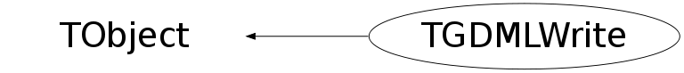

class TGDMLWrite: public TObject
Function Members (Methods)
public:
| TGDMLWrite() | |
| TGDMLWrite(const TGDMLWrite&) | |
| virtual | ~TGDMLWrite() |
| void | TObject::AbstractMethod(const char* method) const |
| virtual void | TObject::AppendPad(Option_t* option = "") |
| virtual void | TObject::Browse(TBrowser* b) |
| static TClass* | Class() |
| virtual const char* | TObject::ClassName() const |
| virtual void | TObject::Clear(Option_t* = "") |
| virtual TObject* | TObject::Clone(const char* newname = "") const |
| virtual Int_t | TObject::Compare(const TObject* obj) const |
| virtual void | TObject::Copy(TObject& object) const |
| virtual void | TObject::Delete(Option_t* option = "")MENU |
| virtual Int_t | TObject::DistancetoPrimitive(Int_t px, Int_t py) |
| virtual void | TObject::Draw(Option_t* option = "") |
| virtual void | TObject::DrawClass() constMENU |
| virtual TObject* | TObject::DrawClone(Option_t* option = "") constMENU |
| virtual void | TObject::Dump() constMENU |
| virtual void | TObject::Error(const char* method, const char* msgfmt) const |
| virtual void | TObject::Execute(const char* method, const char* params, Int_t* error = 0) |
| virtual void | TObject::Execute(TMethod* method, TObjArray* params, Int_t* error = 0) |
| virtual void | TObject::ExecuteEvent(Int_t event, Int_t px, Int_t py) |
| virtual void | TObject::Fatal(const char* method, const char* msgfmt) const |
| virtual TObject* | TObject::FindObject(const char* name) const |
| virtual TObject* | TObject::FindObject(const TObject* obj) const |
| virtual Option_t* | TObject::GetDrawOption() const |
| static Long_t | TObject::GetDtorOnly() |
| virtual const char* | TObject::GetIconName() const |
| virtual const char* | TObject::GetName() const |
| virtual char* | TObject::GetObjectInfo(Int_t px, Int_t py) const |
| static Bool_t | TObject::GetObjectStat() |
| virtual Option_t* | TObject::GetOption() const |
| virtual const char* | TObject::GetTitle() const |
| virtual UInt_t | TObject::GetUniqueID() const |
| virtual Bool_t | TObject::HandleTimer(TTimer* timer) |
| virtual ULong_t | TObject::Hash() const |
| virtual void | TObject::Info(const char* method, const char* msgfmt) const |
| virtual Bool_t | TObject::InheritsFrom(const char* classname) const |
| virtual Bool_t | TObject::InheritsFrom(const TClass* cl) const |
| virtual void | TObject::Inspect() constMENU |
| void | TObject::InvertBit(UInt_t f) |
| virtual TClass* | IsA() const |
| virtual Bool_t | TObject::IsEqual(const TObject* obj) const |
| virtual Bool_t | TObject::IsFolder() const |
| Bool_t | TObject::IsOnHeap() const |
| virtual Bool_t | TObject::IsSortable() const |
| Bool_t | TObject::IsZombie() const |
| virtual void | TObject::ls(Option_t* option = "") const |
| void | TObject::MayNotUse(const char* method) const |
| virtual Bool_t | TObject::Notify() |
| void | TObject::Obsolete(const char* method, const char* asOfVers, const char* removedFromVers) const |
| static void | TObject::operator delete(void* ptr) |
| static void | TObject::operator delete(void* ptr, void* vp) |
| static void | TObject::operator delete[](void* ptr) |
| static void | TObject::operator delete[](void* ptr, void* vp) |
| void* | TObject::operator new(size_t sz) |
| void* | TObject::operator new(size_t sz, void* vp) |
| void* | TObject::operator new[](size_t sz) |
| void* | TObject::operator new[](size_t sz, void* vp) |
| TGDMLWrite& | operator=(const TGDMLWrite&) |
| virtual void | TObject::Paint(Option_t* option = "") |
| virtual void | TObject::Pop() |
| virtual void | TObject::Print(Option_t* option = "") const |
| virtual Int_t | TObject::Read(const char* name) |
| virtual void | TObject::RecursiveRemove(TObject* obj) |
| void | TObject::ResetBit(UInt_t f) |
| virtual void | TObject::SaveAs(const char* filename = "", Option_t* option = "") constMENU |
| virtual void | TObject::SavePrimitive(ostream& out, Option_t* option = "") |
| void | TObject::SetBit(UInt_t f) |
| void | TObject::SetBit(UInt_t f, Bool_t set) |
| virtual void | TObject::SetDrawOption(Option_t* option = "")MENU |
| static void | TObject::SetDtorOnly(void* obj) |
| void | SetG4Compatibility(Bool_t G4Compatible) |
| void | SetNamingSpeed(TGDMLWrite::ENamingType naming) |
| static void | TObject::SetObjectStat(Bool_t stat) |
| virtual void | TObject::SetUniqueID(UInt_t uid) |
| virtual void | ShowMembers(TMemberInspector& insp) |
| virtual void | Streamer(TBuffer& b) |
| void | StreamerNVirtual(TBuffer& b) |
| virtual void | TObject::SysError(const char* method, const char* msgfmt) const |
| Bool_t | TObject::TestBit(UInt_t f) const |
| Int_t | TObject::TestBits(UInt_t f) const |
| virtual void | TObject::UseCurrentStyle() |
| virtual void | TObject::Warning(const char* method, const char* msgfmt) const |
| virtual Int_t | TObject::Write(const char* name = 0, Int_t option = 0, Int_t bufsize = 0) |
| virtual Int_t | TObject::Write(const char* name = 0, Int_t option = 0, Int_t bufsize = 0) const |
| void | WriteGDMLfile(TGeoManager* geomanager, const char* filename = "test.gdml", TString option = "") |
protected:
| virtual void | TObject::DoError(int level, const char* location, const char* fmt, va_list va) const |
| void | TObject::MakeZombie() |
private:
Data Members
public:
| enum ENamingType { | kelegantButSlow | |
| kwithoutSufixNotUniq | ||
| kfastButUglySufix | ||
| }; | ||
| enum TObject::EStatusBits { | kCanDelete | |
| kMustCleanup | ||
| kObjInCanvas | ||
| kIsReferenced | ||
| kHasUUID | ||
| kCannotPick | ||
| kNoContextMenu | ||
| kInvalidObject | ||
| }; | ||
| enum TObject::[unnamed] { | kIsOnHeap | |
| kNotDeleted | ||
| kZombie | ||
| kBitMask | ||
| kSingleKey | ||
| kOverwrite | ||
| kWriteDelete | ||
| }; |
private:
| TGDMLWrite::StructLst* | fAccPatt | list of accepted patterns for division |
| UInt_t | fActNameErr | count of name errors |
| XMLNodePointer_t | fDefineNode | main <define> node... |
| TGDMLWrite::StructLst* | fElementList | list of elements |
| TXMLEngine* | fGdmlE | |
| XMLDocPointer_t | fGdmlFile | |
| TGDMLWrite::StructLst* | fIsotopeList | list of isotopes |
| TGDMLWrite::StructLst* | fMaterialList | list of materials |
| XMLNodePointer_t | fMaterialsNode | main <materials> node... |
| TGDMLWrite::NameLst* | fNameList | list of names (pointer mapped) |
| Int_t | fPhysVolCnt | count of physical volumes |
| TGDMLWrite::StructLst* | fRejShape | list of rejected shapes |
| TGDMLWrite::StructLst* | fShapeList | list of solids |
| UInt_t | fSolCnt | count of name solids |
| XMLNodePointer_t | fSolidsNode | main <solids> node... |
| XMLNodePointer_t | fStructureNode | main <structure> node... |
| TString | fTopVolumeName | |
| Int_t | fVolCnt | count of volumes |
| TGDMLWrite::StructLst* | fVolumeList | list of volumes |
| Bool_t | fgG4Compatibility | |
| static TGDMLWrite* | fgGDMLWrite | pointer to gdml writer |
| Int_t | fgNamingSpeed | |
| static const UInt_t | fgkMaxNameErr | maximum number of errors for naming |
| static const UInt_t | fgkProcBit | 14th bit is set when solid is processed |
| static const UInt_t | fgkProcBitVol | 19th bit is set when volume is processed |
Class Charts
{kind=link}
{kind=link}
{kind=link}
{kind=link}

Function documentation
void SetNamingSpeed(TGDMLWrite::ENamingType naming)
void WriteGDMLfile(TGeoManager* geomanager, const char* filename = "test.gdml", TString option = "")
Wrapper of all exporting methods Creates blank GDML file and fills it with gGeoManager structure converted to GDML structure xml nodes
XMLNodePointer_t ExtractMaterials(TList* materialsLst)
void ExtractSolids(TObjArray* shapesLst)
void ExtractVolumes(TGeoVolume* volume)
XMLNodePointer_t CreateAtomN(Double_t atom, const char* unit = "g/mole")
Creates "atom" node for GDML
XMLNodePointer_t CreateDN(Double_t density, const char* unit = "g/cm3")
Creates "D" density node for GDML
XMLNodePointer_t CreateFractionN(Double_t percentage, const char* refName)
Creates "fraction" node for GDML
XMLNodePointer_t CreateIsotopN(TGeoIsotope* isotope, const char* name)
Creates "isotope" node for GDML
XMLNodePointer_t CreateElementN(TGeoElement* element, XMLNodePointer_t materials, const char* name)
Creates "element" node for GDML
element node and attribute
XMLNodePointer_t CreateMixtureN(TGeoMixture* mixture, XMLNodePointer_t materials, TString mname)
Creates "material" node for GDML with references to other sub elements
XMLNodePointer_t CreateMaterialN(TGeoMaterial* material, TString mname)
Creates "material" node for GDML
XMLNodePointer_t CreateConeN(TGeoConeSeg* geoShape)
Creates "cone" node for GDML from TGeoConeSeg object
XMLNodePointer_t CreateTubeN(TGeoTubeSeg* geoShape)
Creates "tube" node for GDML from object TGeoTubeSeg
XMLNodePointer_t CreateZplaneN(Double_t z, Double_t rmin, Double_t rmax)
Creates "zplane" node for GDML
XMLNodePointer_t CreateCommonBoolN(TGeoCompositeShape* geoShape)
Creates common part of union intersection and subtraction nodes
XMLNodePointer_t CreatePositionN(const char* name, const Double_t* position, const char* type = "position", const char* unit = "cm")
Creates "position" kind of node for GDML
XMLNodePointer_t CreateRotationN(const char* name, TGDMLWrite::Xyz rotation, const char* type = "rotation", const char* unit = "deg")
Creates "rotation" kind of node for GDML
XMLNodePointer_t CreateSetupN(const char* topVolName, const char* name = "default", const char* version = "1.0")
Creates "setup" node for GDML
XMLNodePointer_t StartVolumeN(const char* name, const char* solid, const char* material)
Creates "volume" node for GDML
XMLNodePointer_t CreatePhysVolN(const char* volref, const char* posref, const char* rotref, XMLNodePointer_t scaleN)
Creates "physvol" node for GDML
XMLNodePointer_t CreateDivisionN(Double_t offset, Double_t width, Int_t number, const char* axis, const char* unit, const char* volref)
Creates "divisionvol" node for GDML
XMLNodePointer_t ChooseObject(TGeoShape* geoShape)
Chooses the object and method that should be used for processing
TGeoCompositeShape* CreateFakeCtub(TGeoCtub* geoShape)
Bool_t IsInList(TGDMLWrite::NameList list, TString name2check)
Checks whether name2check is in (NameList) list
TString GenName(TString oldname)
NCNAME basic restrictions
Replace "$" character with empty character
Bool_t CanProcess(TObject* pointer)
TString GetPattAxis(Int_t divAxis, const char* pattName, TString& unit)
void SetG4Compatibility(Bool_t G4Compatible)